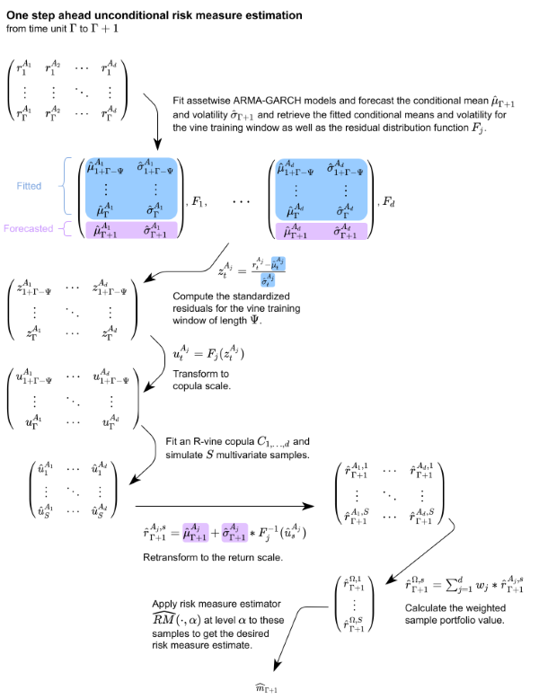

This article will showcase what is going on under the hood of the portvine package. It will not contain any code so for a practical introduction on how to work with the package have a look at the Get Started vignette. At the end of this article one can find a mapping table from the theoretical notation to the function arguments in the portvine package. Note that this is just a package article so for a more rigorous and way more detailed explanation of the theory consult Sommer (2022).
In order to discuss the theory some notation is needed. One has a portfolio \(\Omega\) of \(d\) assets \(A_j\) with corresponding log returns \(r_t^{A_j}\) for the time frame \(t = 1,\dots,T\). Additionally one has a weight of each asset in the portfolio denoted by \(w_j\). So one can write \(\Omega = \{w_j,r_t^{A_j}|t = 1,\dots,T;j=1,\dots,d\}\). Furthermore one has the hyperparameters
- \(\Gamma < T \in \mathbb{N}\): Length of the fitting window for the marginal models. Here one assumes that this is also the time index of the most recent asset return observation when starting the rolling window approach. So for the first marginal time series model one uses all the available historic data.
- \(\Psi \leq \Gamma \in \mathbb{N}\): Length of the fitting window for the vine copula model in order to capture dependencies.
- \(S \in \mathbb{N}\): : Number of to be simulated log returns for the risk measure estimation.
Despite the final algorithms are performed in a rolling window fashion it is easier to grasp the one step ahead risk measure estimation which moves through the data according to the parameters introduced above as shown below.
The detailed unconditional one step ahead risk measure estimation is now shown.

This one step approach however requires a huge number of models to be fit in order to estimate the risk measures for even a smallish interval of interest like 50 trading days. Thus the rolling window approach with the following additional parameters is introduced.
- \(\gamma \leq (T-\Gamma) \in \mathbb{N}\): Length of the forecasting window of the marginal models.
- \(\kappa \leq \gamma \in \mathbb{N}\): Length of the usage window of the vine copula model.
It might be reasonable to pick them such that \((T-\Gamma) \text{ mod } \gamma \equiv 0\) and one requires \(\gamma \text{ mod } \kappa \equiv 0\). An illustration of the parameters and the rolling of the respective windows of the rolling window approach can be found below.
The full rolling window algorithm for unconditional risk measure estimation is stated in my master thesis to which I will link here as soon as it will be published. Now the single conditional risk measure estimation will be discussed with some additional notation.
- Market index \(I\): that is observed over the same time scale as the portfolio \(\Omega\), the log returns are again denoted by \(r_t^I\).
- Let \(j_1,\dots,j_d\) be a to be determined permutation of the indices of the assets \(1,\dots,d\).
- \(\alpha^I \in (0,1)\): Confidence level of the estimated quantile from the marginal market index distribution. This confidence level is the conditioning value for the final risk measure estimate on the copula scale. How this fits into the estimation process can be seen below.
The approach is actually quite similar and is again illustrated for the one step ahead single conditional risk measure estimation.

The ordering of the D-vine is calculated based on Pearson and partial correlations from the training data and aims to maximize the resulting full likelihood of the copula. An illustration of the estimated dependencies that are maximized in each step of the algorithm for a 4 dimensional example is given below.
The \(c_{depth}\) parameter can be used to only account for the dependencies up to the corresponding depth. More details can be once again found in my master thesis.
Additionally to this approach based on a quantile level one can also use the copula scale residual of the index \(I\) from the prior time unit i.e. to estimate the risk measure at time unit \(t\) use \(u^I_{t-1}\) as the conditioning value at the copula scale. The resulting estimated risk measure will emulate the behavior of conditioning on the predicted market index log return series and might be a valuable comparison to the estimated quantile based conditional risk measures. Opposed to the quantile based conditional risk measures one will can call these prior residual conditional risk measures. These prior_resid risk measure estimates however suffer from exaggerating market fluctuations and thus should be handled with care. Another non quantile based conditional risk measure estimation approach is the one calculating the realized residual conditional risk measures which are based on the actual observed residuals which means one conditions on the actually realized value of the conditional asset. This is an oracle estimator as it suffers from information leakage but is a valuable comparison to the quantile based conditional risk measures. These resid risk measure estimates are calculated by default in the conditional case.
Extending the single conditional case to two conditioning market indices \(I_1, I_2\) is quite straight forward. The only crucial change is to determine the conditioning values for the conditional sampling based on a quantile level \(\alpha^I\). This is achieved via the the bivariate copula fitted between the two market indices to adjust for their dependence. The ordering algorithm resulting in the order \(A_{j_d}-\dots- A_{j_1}-I_{\tilde{j}_1}-I_{\tilde{j}_2}\) is conceptually equal to the one for a single market index. A detailed elaboration can be found in my master thesis. It is also there where the conditional sampling algorithms for D-vine copulas based on the rightmost leaf(s) were introduced. Moreover the thesis also theoretically elaborates on applicable backtesting strategies for the resulting portfolio level Value at Risk and expected shortfall estimates.
Finally a table is given that maps the function arguments to the now theoretically used variable names.
| Theoretical | Function | Argument |
|---|---|---|
|
\(\{r^{A_j}_t|t=1,\dot s,T;j = 1,\dots,d\}\) and in the conditional case also the log returns of the conditioning assets e.g. \(r^I_t\). |
estimate_risk_roll() |
data |
| \(\{w_j|j=1,\dots,d\}\) | estimate_risk_roll() |
weights |
| \(\Gamma\) | marginal_settings() |
train_size |
| \(\gamma\) | marginal_settings() |
refit_size |
| \(\Psi\) | vine_settings() |
train_size |
| \(\kappa\) | vine_settings() |
refit_size |
| \(S\) | estimate_risk_roll() |
n_samples |
| \(\alpha\) | estimate_risk_roll() |
alpha |
| \(\widehat{RM}(\cdot)\) | estimate_risk_roll() |
risk_measures |
| \(I\) or \(I_1,I_2\) | estimate_risk_roll() |
cond_vars |
| \(\alpha^I\) | estimate_risk_roll() |
cond_u |
| \(c_{depth}\) | estimate_risk_roll() |
cutoff_depth |